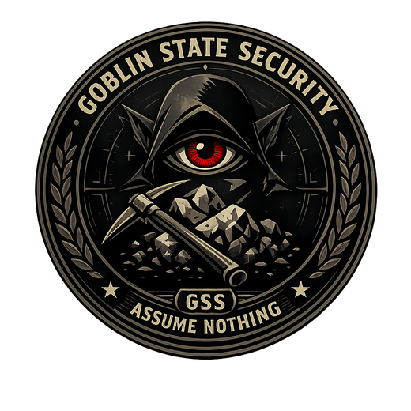

Somebody bullies a hauler, we undock in numbers that are frankly excessive. Excessive is the strategy.
A market only works if people can actually get to it. Also most of the folks getting farmed are three weeks old and flying something they saved a month for, and that makes us weird about it.
GSS keeps files. Names, corps, timezones, who you fly with, how you behave when it goes wrong. We've been told this is a lot. We agree. We're still doing it.
Logi, EWAR, tackle, recon, FCs. Be excellent at one thing. We'll generously file the rest under personality.
Home is highsec, like cowards. The work is not in highsec, which is how we justify the ships.